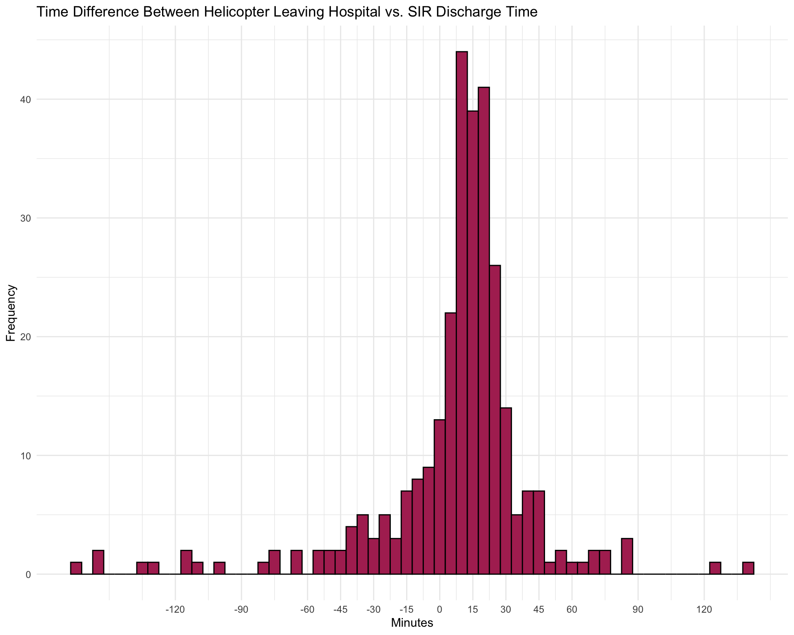
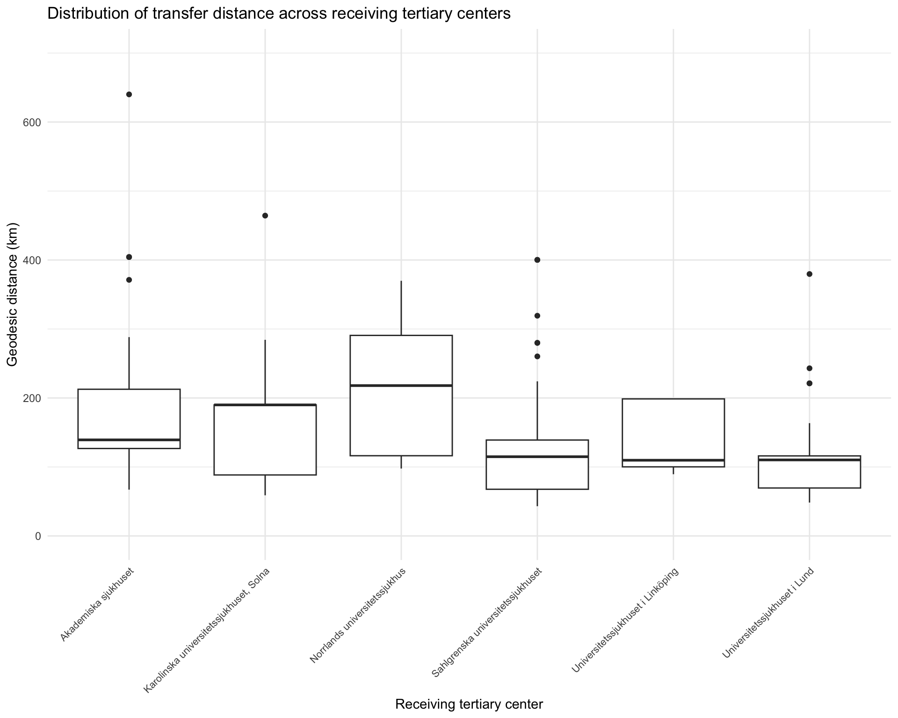
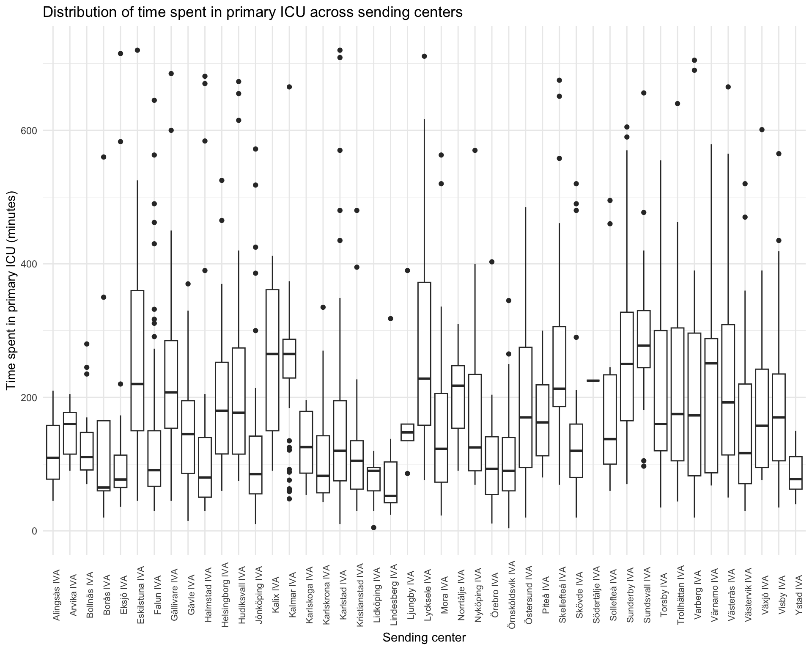
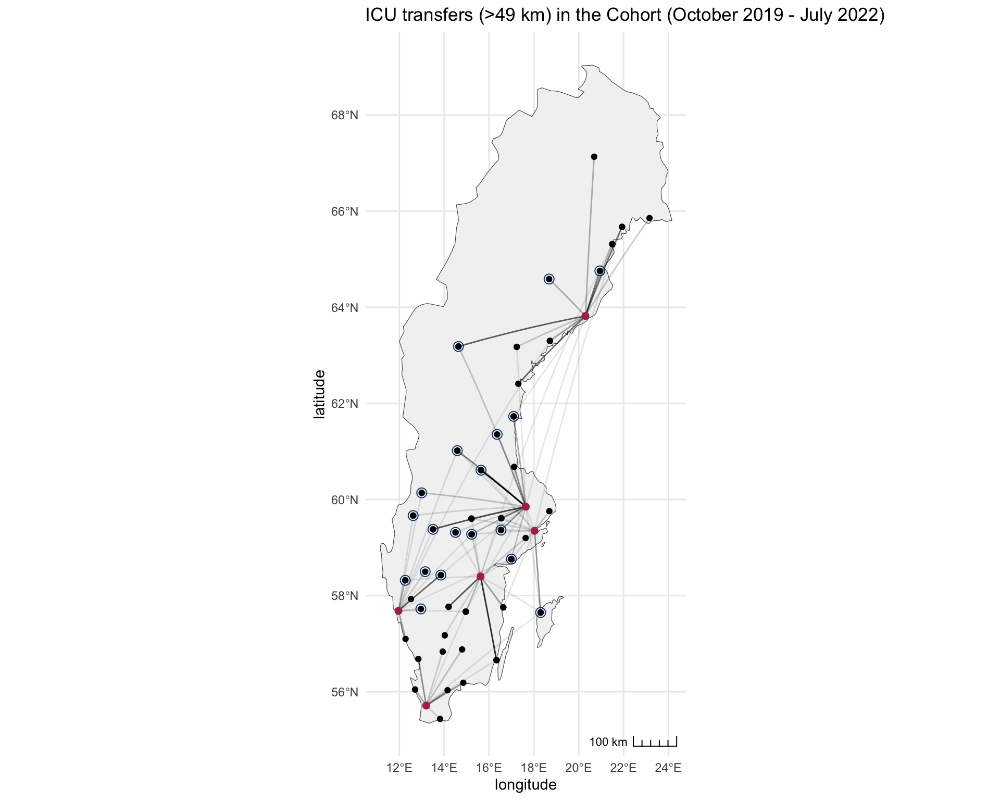
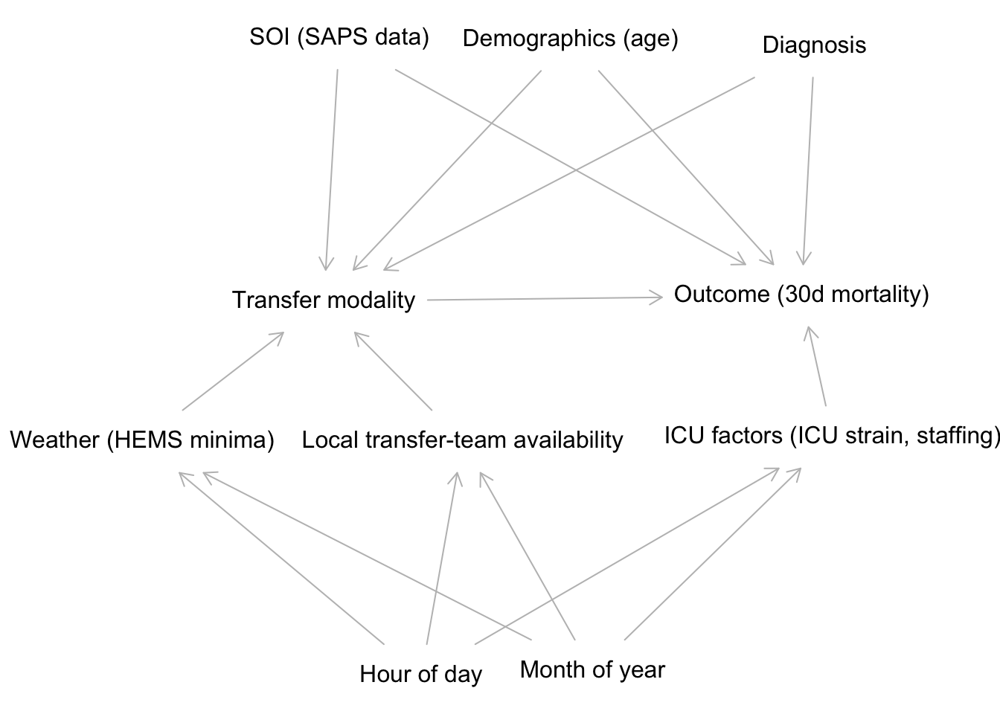

Descriptive analysis of the cohort of transferred NSICU patients
1 On data preprocessing
This markdown contains a summary of the transferred cohort prior to further analysis. The data comes from SIR (clinical data), PAR (demographics and diagnosis), dödsorsaksregistret (date of death), FlightRadar24 (helicopter flight data), ogimet.com (weather data). A brief description of the preprocessing will follow. Admissions to a primary ICU (i.e. a non-university hospital general ICU) are matched with NSICU-relevant (per inferred diagnosis) PAR admissions at a tertiary center on on the same day or day after as the primary ICU discharge. Additionally, PAR admissions on the day before the ICU discharge are included if (and only if) the SIR discharge is between 00:00 and 03:59 hours. The primary ICU length of stay must be less than 24 hours.Only PAR admissions with a discharge diagnosis fulfilling specific diagnostic criteria are included. Each pair of primary ICU admission and tertiary admission is considered an interfacility transfer (IFT). Only the first such transfer for each patient is included.
The flight data, containing all rotary wing movements recorded (from MLAT and ADS-B) in Swedish airspace between January 2017 and May 2024, is parsed to infer outgoing flights from primary hospitals to receiving tertiary hospitals. Each interfacility transfer (from the previous step) is matched with flights going in the same direction (within a +/- 3 hour window relative to primary ICU discharge). If there is a match, it is assumed that the patient was transferred by HEMS.
Weather data (METAR) for the same period is parsed, and HEMS weather minima are inferred based on the reports. At the point of ICU discharge, the current METAR from the nearest reporting airport is used to infer if weather conditions permitted HEMS operations.
Only patients/flights starting October 2019 are included, as flight data is patchy prior to this time making inference of transfer modality very uncertain. In the fall of 2019, the busiest transport organization (Luftburen intensivvård, Uppsala) started using a new helicopter with a much better transponder, making their activities traceable. Prior to this date, very few flights can be retrieved in this large part of the country.
Finally, only interfacility transfers with a road distance greater than 49 km are included.
1.1 On matching flights with patient transfers
In the cases where the script matches a flight with a patient (thus inferring a HEMS IFT), we can look at the time difference between the SIR discharge time and the time of leaving the hospital (technically: an area surrounding the hospital) in the flight data. Reassuringly, even if we allow for a time window of +/- 3 hours, almost all flights are leaving the primary hospital within 30 minutes of ICU discharge, which makes sense! Extending the 3 hour window obviously adds a few cases, but with increasing risk of false positives.
Code
d <- read_delim("/Users/JO/PhD/nsicu-transfers/data/pre-processed-data/patient-df-2024-06-23 12:50:07.576564.csv", show_col_types = FALSE)
d <- d %>%
mutate(hems_ift = ifelse(hems_ift, "HEMS", "Other"))
dsc_time <- ymd_hms(d$sir_dsc_time_UTC, tz="UTC")
out_time <- ymd_hms(d$UTC_out_sending_hems, tz="UTC")
timediff_minutes <- data.frame((out_time - dsc_time) / 60)
names(timediff_minutes) <- c("SIR_discharge_time_relative_helicopter_out_time")
ggplot(timediff_minutes, aes(x = SIR_discharge_time_relative_helicopter_out_time)) +
geom_histogram(binwidth = 5, fill = "maroon", color = "black") +
labs(title = "Time Difference Between Helicopter Leaving Hospital vs. SIR Discharge Time",
x = "Minutes",
y = "Frequency") +
scale_x_continuous(breaks = c(-120, -90, -60, -45, -30, -15, 0, 15, 30, 45, 60, 90, 120)) +
theme_minimal()
2 Cohort summary
Code
theme_gtsummary_compact()
d %>%
tbl_summary(include=c(age,
sex_female,
DNR,
BMI,
DX_GROUP,
sir_consciousness_level,
overall_obtunded,
SAPS_GCS,
SAPS_RLS85,
any_AMV,
respiratory_instability_markers,
SAPS_hypoxia,
SAPS_hypotension,
SAPS_hypertension,
SAPS_bradycardia,
SAPS_tachycardia,
hemodynamic_instability_markers,
SAPS_acidosis,
SAPS_hypothermia,
hospital_name_receiving,
formatted_icu_name,
sir_hospital_type,
sir_total_time,
icu_discharge_afterhours,
icu_discharge_nighttime,
road_distance,
geodesic_distance,
hems_minima,
hems_ift,
d7,
d30,
d365
),
label = list(age ~ "Age, years",
sex_female ~ "Female",
DNR ~ "DNR order",
BMI ~ "BMI, kg/m2",
DX_GROUP ~ "Inferred diagnosis",
sir_consciousness_level ~ "SIR SAPS consciousness level",
overall_obtunded ~ "Pre-transfer obtunded (not fully alert)",
SAPS_GCS ~ "SAPS GCS",
SAPS_RLS85 ~ "SAPS RLS85",
any_AMV ~ "Pre-transfer Mechanical Ventilation",
SAPS_hypoxia ~ "SAPS Hypoxemia (PAO2<8 kPa)",
respiratory_instability_markers ~ "Markers of respiratory instability",
SAPS_hypotension ~ "SAPS hypotension (<90 mmHg)",
SAPS_hypertension ~ "SAPS hypertension (>180 mmHg)",
SAPS_bradycardia ~ "SAPS bradycardia (<50 bpm)",
SAPS_tachycardia ~ "SAPS tachycardia (>110 bpm) ",
hemodynamic_instability_markers ~ "Markers of hemodynamic instability",
SAPS_acidosis ~ "SAPS acidosis (pH <7.25)",
SAPS_hypothermia ~ "SAPS hypothermia (<35°C)",
hospital_name_receiving ~ "Receiving hospital",
formatted_icu_name ~ "Sending ICU",
sir_hospital_type ~ "Sending hospital type",
sir_total_time ~ "Time in primary ICU, minutes",
icu_discharge_afterhours ~ "Discharge outside of office hours (jourtid)",
icu_discharge_nighttime ~ "Discharge between hours 22:00 - 07:00",
road_distance ~ "Road distance, km",
geodesic_distance ~ "Geodesic distance, km",
hems_minima ~ "HEMS weather minima met at discharge",
hems_ift ~ "Interfacility transfer modality",
d7 ~ "7-day mortality",
d30 ~ "30-day mortality",
d365 ~ "90-day mortality"
),
missing="always",
missing_text="Missing"
) %>%
add_n()| Characteristic | N | N = 1,2321 |
|---|---|---|
| Age, years | 1,232 | 62 (50, 72) |
| Missing | 0 | |
| Female | 1,232 | 509 (41%) |
| Missing | 0 | |
| DNR order | 1,232 | 16 (1.3%) |
| Missing | 0 | |
| BMI, kg/m2 | 250 | 26.0 (23.4, 28.8) |
| Missing | 982 | |
| Inferred diagnosis | 1,232 | |
| ABM | 41 (3.3%) | |
| AIS | 148 (12%) | |
| ASAH | 307 (25%) | |
| AVM | 3 (0.2%) | |
| CFX | 47 (3.8%) | |
| CVT | 8 (0.6%) | |
| ENC | 6 (0.5%) | |
| HC | 4 (0.3%) | |
| ICH | 220 (18%) | |
| SDH | 30 (2.4%) | |
| SEP | 3 (0.2%) | |
| TBI | 406 (33%) | |
| TUM | 9 (0.7%) | |
| Missing | 0 | |
| SIR SAPS consciousness level | 1,212 | |
| I (GCS ≥13) | 566 (47%) | |
| II (GCS 7-12) | 366 (30%) | |
| III (GCS 6) | 79 (6.5%) | |
| IV (GCS 5) | 63 (5.2%) | |
| V (GCS ≤4) | 138 (11%) | |
| Missing | 20 | |
| Pre-transfer obtunded (not fully alert) | 1,212 | 904 (75%) |
| Missing | 20 | |
| SAPS GCS | 112 | 13.0 (6.0, 14.0) |
| Missing | 1,120 | |
| SAPS RLS85 | 1,100 | |
| 1 | 289 (26%) | |
| 2 | 220 (20%) | |
| 3 | 177 (16%) | |
| 4 | 166 (15%) | |
| 5 | 70 (6.4%) | |
| 6 | 57 (5.2%) | |
| 7 | 41 (3.7%) | |
| 8 | 80 (7.3%) | |
| Missing | 132 | |
| Pre-transfer Mechanical Ventilation | 1,232 | 700 (57%) |
| Missing | 0 | |
| Markers of respiratory instability | 1,232 | 44 (3.6%) |
| Missing | 0 | |
| SAPS Hypoxemia (PAO2<8 kPa) | 1,013 | 29 (2.9%) |
| Missing | 219 | |
| SAPS hypotension (<90 mmHg) | 1,184 | 140 (12%) |
| Missing | 48 | |
| SAPS hypertension (>180 mmHg) | 1,184 | 101 (8.5%) |
| Missing | 48 | |
| SAPS bradycardia (<50 bpm) | 1,169 | 20 (1.7%) |
| Missing | 63 | |
| SAPS tachycardia (>110 bpm) | 1,169 | 166 (14%) |
| Missing | 63 | |
| Markers of hemodynamic instability | 1,232 | 45 (3.7%) |
| Missing | 0 | |
| SAPS acidosis (pH <7.25) | 1,067 | 56 (5.2%) |
| Missing | 165 | |
| SAPS hypothermia (<35°C) | 1,063 | 36 (3.4%) |
| Missing | 169 | |
| Receiving hospital | 1,232 | |
| Akademiska sjukhuset | 401 (33%) | |
| Karolinska universitetssjukhuset, Solna | 76 (6.2%) | |
| Norrlands universitetssjukhus | 289 (23%) | |
| Sahlgrenska universitetssjukhuset | 134 (11%) | |
| Universitetssjukhuset i Linköping | 195 (16%) | |
| Universitetssjukhuset i Lund | 137 (11%) | |
| Missing | 0 | |
| Sending ICU | 1,232 | |
| Alingsås IVA | 6 (0.5%) | |
| Arvika IVA | 7 (0.6%) | |
| Bollnäs IVA | 22 (1.8%) | |
| Borås IVA | 13 (1.1%) | |
| Eksjö IVA | 20 (1.6%) | |
| Eskilstuna IVA | 39 (3.2%) | |
| Falun IVA | 91 (7.4%) | |
| Gällivare IVA | 21 (1.7%) | |
| Gävle IVA | 34 (2.8%) | |
| Halmstad IVA | 33 (2.7%) | |
| Helsingborg IVA | 20 (1.6%) | |
| Hudiksvall IVA | 25 (2.0%) | |
| Jönköping IVA | 53 (4.3%) | |
| Kalix IVA | 12 (1.0%) | |
| Kalmar IVA | 75 (6.1%) | |
| Karlskoga IVA | 8 (0.6%) | |
| Karlskrona IVA | 29 (2.4%) | |
| Karlstad IVA | 60 (4.9%) | |
| Kristianstad IVA | 24 (1.9%) | |
| Lidköping IVA | 9 (0.7%) | |
| Lindesberg IVA | 12 (1.0%) | |
| Ljungby IVA | 8 (0.6%) | |
| Lycksele IVA | 21 (1.7%) | |
| Mora IVA | 45 (3.7%) | |
| Norrtälje IVA | 10 (0.8%) | |
| Nyköping IVA | 17 (1.4%) | |
| Örebro IVA | 32 (2.6%) | |
| Örnsköldsvik IVA | 27 (2.2%) | |
| Östersund IVA | 57 (4.6%) | |
| Piteå IVA | 14 (1.1%) | |
| Skellefteå IVA | 42 (3.4%) | |
| Skövde IVA | 49 (4.0%) | |
| Södertälje IVA | 1 (<0.1%) | |
| Sollefteå IVA | 12 (1.0%) | |
| Sunderby IVA | 45 (3.7%) | |
| Sundsvall IVA | 46 (3.7%) | |
| Torsby IVA | 15 (1.2%) | |
| Trollhättan IVA | 19 (1.5%) | |
| Varberg IVA | 28 (2.3%) | |
| Värnamo IVA | 6 (0.5%) | |
| Västerås IVA | 40 (3.2%) | |
| Västervik IVA | 30 (2.4%) | |
| Växjö IVA | 13 (1.1%) | |
| Visby IVA | 36 (2.9%) | |
| Ystad IVA | 6 (0.5%) | |
| Missing | 0 | |
| Sending hospital type | 1,232 | |
| Community Hospital | 424 (34%) | |
| Regional Hospital | 776 (63%) | |
| University Hospital | 32 (2.6%) | |
| Missing | 0 | |
| Time in primary ICU, minutes | 1,232 | 160 (90, 275) |
| Missing | 0 | |
| Discharge outside of office hours (jourtid) | 1,232 | 934 (76%) |
| Missing | 0 | |
| Discharge between hours 22:00 - 07:00 | 1,232 | 376 (31%) |
| Missing | 0 | |
| Road distance, km | 1,232 | 187 (121, 271) |
| Missing | 0 | |
| Geodesic distance, km | 1,232 | 139 (98, 213) |
| Missing | 0 | |
| HEMS weather minima met at discharge | 1,196 | 1,041 (87%) |
| Missing | 36 | |
| Interfacility transfer modality | 1,232 | |
| HEMS | 296 (24%) | |
| Other | 936 (76%) | |
| Missing | 0 | |
| 7-day mortality | 1,232 | 114 (9.3%) |
| Missing | 0 | |
| 30-day mortality | 1,232 | 205 (17%) |
| Missing | 0 | |
| 90-day mortality | 1,232 | 300 (24%) |
| Missing | 0 | |
| 1 Median (IQR); n (%) | ||
2.1 Cohort summary by diagnosis
Code
d %>%
filter(DX_GROUP %in% c('TBI', 'ASAH', 'ICH', 'AIS', 'SDH', 'ABM', 'CFX', 'AVM', 'CVT', 'TUM', 'HC')) %>%
select(DX_GROUP, age, sex_female, sir_total_time, hems_ift, sir_consciousness_level, overall_obtunded, overall_unconcious, any_AMV, SAPS_hypoxia, SAPS_hypotension, SAPS_hypertension, SAPS_bradycardia, SAPS_hypothermia, SAPS_acidosis, d30) %>%
tbl_summary(by='DX_GROUP', label = list(age ~ "Age, years",
sex_female ~ "Female",
sir_consciousness_level ~ "SIR SAPS consciousness level",
overall_obtunded ~ "Pre-transfer obtunded (not fully alert)",
overall_unconcious ~ "Pre-transfer unconscious (GCS <9)",
any_AMV ~ "Pre-transfer Mechanical Ventilation",
SAPS_hypoxia ~ "SAPS Hypoxemia (PAO2<8 kPa)",
SAPS_hypotension ~ "SAPS hypotension <90 mmHg",
SAPS_hypertension ~ "SAPS hypertension (>180 mmHg)",
SAPS_bradycardia ~ "SAPS bradycardia (<50 bpm)",
SAPS_hypothermia ~ "SAPS hypothermia (<35°C)",
SAPS_acidosis ~ "SAPS acidosis (pH <7.25)",
sir_total_time ~ "Time in primary ICU, minutes",
d30 ~ "30-day mortality",
hems_ift ~ "Interfacility transfer modality"
),
missing_text="Missing"
) %>%
add_n()| Characteristic | N | ABM, N = 411 | AIS, N = 1481 | ASAH, N = 3071 | AVM, N = 31 | CFX, N = 471 | CVT, N = 81 | HC, N = 41 | ICH, N = 2201 | SDH, N = 301 | TBI, N = 4061 | TUM, N = 91 |
|---|---|---|---|---|---|---|---|---|---|---|---|---|
| Age, years | 1,223 | 57 (41, 65) | 71 (60, 78) | 60 (51, 68) | 50 (35, 60) | 62 (42, 71) | 61 (50, 67) | 42 (38, 46) | 60 (50, 68) | 67 (60, 73) | 64 (48, 75) | 42 (29, 50) |
| Female | 1,223 | 14 (34%) | 52 (35%) | 208 (68%) | 1 (33%) | 13 (28%) | 2 (25%) | 1 (25%) | 89 (40%) | 10 (33%) | 110 (27%) | 5 (56%) |
| Time in primary ICU, minutes | 1,223 | 346 (240, 675) | 119 (73, 225) | 105 (70, 195) | 349 (293, 400) | 325 (192, 936) | 258 (220, 293) | 195 (160, 218) | 158 (90, 255) | 188 (98, 334) | 190 (107, 330) | 120 (67, 205) |
| Interfacility transfer modality | 1,223 | |||||||||||
| HEMS | 8 (20%) | 39 (26%) | 74 (24%) | 1 (33%) | 13 (28%) | 1 (13%) | 0 (0%) | 48 (22%) | 5 (17%) | 101 (25%) | 3 (33%) | |
| Other | 33 (80%) | 109 (74%) | 233 (76%) | 2 (67%) | 34 (72%) | 7 (88%) | 4 (100%) | 172 (78%) | 25 (83%) | 305 (75%) | 6 (67%) | |
| SIR SAPS consciousness level | 1,204 | |||||||||||
| I (GCS ≥13) | 7 (17%) | 73 (51%) | 181 (60%) | 3 (100%) | 41 (89%) | 3 (38%) | 0 (0%) | 85 (39%) | 15 (50%) | 153 (39%) | 3 (33%) | |
| II (GCS 7-12) | 24 (59%) | 34 (24%) | 57 (19%) | 0 (0%) | 1 (2.2%) | 3 (38%) | 3 (100%) | 77 (35%) | 12 (40%) | 148 (37%) | 3 (33%) | |
| III (GCS 6) | 6 (15%) | 9 (6.3%) | 12 (3.9%) | 0 (0%) | 0 (0%) | 0 (0%) | 0 (0%) | 23 (11%) | 2 (6.7%) | 25 (6.3%) | 1 (11%) | |
| IV (GCS 5) | 3 (7.3%) | 10 (6.9%) | 16 (5.3%) | 0 (0%) | 1 (2.2%) | 2 (25%) | 0 (0%) | 8 (3.7%) | 0 (0%) | 22 (5.5%) | 0 (0%) | |
| V (GCS ≤4) | 1 (2.4%) | 18 (13%) | 38 (13%) | 0 (0%) | 3 (6.5%) | 0 (0%) | 0 (0%) | 26 (12%) | 1 (3.3%) | 49 (12%) | 2 (22%) | |
| Missing | 0 | 4 | 3 | 0 | 1 | 0 | 1 | 1 | 0 | 9 | 0 | |
| Pre-transfer obtunded (not fully alert) | 1,204 | 38 (93%) | 107 (74%) | 192 (63%) | 2 (67%) | 11 (24%) | 7 (88%) | 3 (100%) | 195 (89%) | 19 (63%) | 315 (79%) | 8 (89%) |
| Missing | 0 | 4 | 3 | 0 | 1 | 0 | 1 | 1 | 0 | 9 | 0 | |
| Pre-transfer unconscious (GCS <9) | 1,204 | 24 (59%) | 52 (36%) | 96 (32%) | 0 (0%) | 4 (8.7%) | 3 (38%) | 2 (67%) | 88 (40%) | 7 (23%) | 169 (43%) | 6 (67%) |
| Missing | 0 | 4 | 3 | 0 | 1 | 0 | 1 | 1 | 0 | 9 | 0 | |
| Pre-transfer Mechanical Ventilation | 1,223 | 29 (71%) | 71 (48%) | 145 (47%) | 1 (33%) | 15 (32%) | 5 (63%) | 3 (75%) | 150 (68%) | 11 (37%) | 259 (64%) | 5 (56%) |
| SAPS Hypoxemia (PAO2<8 kPa) | 1,010 | 2 (6.7%) | 1 (1.0%) | 6 (2.3%) | 0 (0%) | 1 (2.8%) | 0 (0%) | 0 (0%) | 6 (3.1%) | 1 (4.3%) | 12 (3.5%) | 0 (0%) |
| Missing | 11 | 46 | 46 | 0 | 11 | 2 | 1 | 26 | 7 | 61 | 2 | |
| SAPS hypotension <90 mmHg | 1,176 | 3 (7.7%) | 13 (9.4%) | 26 (8.7%) | 0 (0%) | 10 (22%) | 1 (13%) | 1 (25%) | 19 (8.8%) | 0 (0%) | 66 (17%) | 1 (13%) |
| Missing | 2 | 10 | 9 | 0 | 1 | 0 | 0 | 5 | 1 | 18 | 1 | |
| SAPS hypertension (>180 mmHg) | 1,176 | 1 (2.6%) | 14 (10%) | 27 (9.1%) | 1 (33%) | 0 (0%) | 1 (13%) | 0 (0%) | 38 (18%) | 3 (10%) | 15 (3.9%) | 0 (0%) |
| Missing | 2 | 10 | 9 | 0 | 1 | 0 | 0 | 5 | 1 | 18 | 1 | |
| SAPS bradycardia (<50 bpm) | 1,161 | 0 (0%) | 0 (0%) | 7 (2.4%) | 0 (0%) | 1 (2.2%) | 0 (0%) | 0 (0%) | 4 (1.9%) | 0 (0%) | 8 (2.1%) | 0 (0%) |
| Missing | 2 | 11 | 14 | 0 | 1 | 0 | 1 | 9 | 1 | 22 | 1 | |
| SAPS hypothermia (<35°C) | 1,057 | 0 (0%) | 1 (0.8%) | 4 (1.6%) | 0 (0%) | 3 (7.0%) | 0 (0%) | 1 (50%) | 5 (2.6%) | 0 (0%) | 22 (6.2%) | 0 (0%) |
| Missing | 3 | 26 | 50 | 0 | 4 | 2 | 2 | 27 | 1 | 49 | 2 | |
| SAPS acidosis (pH <7.25) | 1,061 | 2 (5.9%) | 4 (3.8%) | 11 (4.0%) | 0 (0%) | 3 (7.5%) | 2 (29%) | 1 (33%) | 3 (1.5%) | 0 (0%) | 30 (8.0%) | 0 (0%) |
| Missing | 7 | 44 | 35 | 0 | 7 | 1 | 1 | 25 | 8 | 31 | 3 | |
| 30-day mortality | 1,223 | 5 (12%) | 46 (31%) | 40 (13%) | 0 (0%) | 5 (11%) | 0 (0%) | 0 (0%) | 33 (15%) | 3 (10%) | 69 (17%) | 3 (33%) |
| 1 Median (IQR); n (%) | ||||||||||||
2.2 Distribution of transfer distance (per receiving hospital)
Code
ggplot(data = d, aes(x = factor(hospital_name_receiving), y = geodesic_distance)) +
geom_boxplot() +
labs(
x = "Receiving tertiary center",
y = "Geodesic distance (km)",
title = "Distribution of transfer distance across receiving tertiary centers"
) +
ylim(0,700) +
theme_minimal() +
theme(
axis.text.x = element_text(
angle = 45,
hjust = 1,
size = 8
))
2.3 Distribution of primary ICU time (per sending hospital)
Code
ggplot(data = d, aes(x = factor(formatted_icu_name), y = sir_total_time)) +
geom_boxplot() +
labs(
x = "Sending center",
y = "Time spent in primary ICU (minutes)",
title = "Distribution of time spent in primary ICU across sending centers"
) +
ylim(0,720) +
theme_minimal() +
theme(
axis.text.x = element_text(
angle = 90,
size = 8,
))
2.4 A map of the interfacility transfers
Code
# Create a dataframe of routes in the dataset and the frequencies
routes <- d %>%
group_by(formatted_icu_name, hospital_name_receiving) %>%
count() %>%
ungroup() %>%
arrange(n)
# Create a tibble of longitude and latitude values of sources
sources_tbl <- d %>%
select(start_longitude, start_latitude)
# Create a tibble of longitude and latitude values of destinations
destinations_tbl <- d %>%
select(end_longitude, end_latitude)
# Calculate great circles
sl_routes <- gcIntermediate(sources_tbl, destinations_tbl,
n = 50, addStartEnd = TRUE,
sp = TRUE)
# Get mapdata for Sweden from Naturalearth
swe <- ne_countries(scale = "medium", country="Sweden", type="countries", returnclass="sf")
routes_id <- rowid_to_column(routes, var = "id")
routes_long <- routes_id %>%
gather(key = "type", value = "place", formatted_icu_name, hospital_name_receiving)
end <- d %>% select(hospital_name_receiving, end_latitude, end_longitude) %>% rename("place" = "hospital_name_receiving", "latitude" = "end_latitude", "longitude" = "end_longitude")
start <- d %>% select(formatted_icu_name, start_latitude, start_longitude) %>% rename("place" = "formatted_icu_name", "latitude" = "start_latitude", "longitude" = "start_longitude")
locations <- bind_rows(end, start) %>% distinct()
routes_long_geo <- left_join(routes_long, locations, by = "place")
routes_long_sf <- st_as_sf(routes_long_geo,
coords = c("longitude", "latitude"),
crs = 4326)
routes_lines <- routes_long_sf %>%
group_by(id) %>%
summarise(do_union = FALSE) %>%
st_cast("LINESTRING")
routes_lines <- left_join(routes_lines, routes_id, by = "id")
routes_sf_tidy <- routes_lines %>%
st_segmentize(units::set_units(20, km))
library(lwgeom)
routes_sf_tidy <- routes_lines %>%
st_segmentize(units::set_units(20, km))
heavy_users <- unique(filter(d, hems_ift_proportion >= 0.2)$formatted_icu_name)Code
library(ggspatial)
library(ggspatial)
#| label: fig-swedem
#|
#| fig-cap: "Transfers of ICU patients in the cohort. The opacity of the line denotes the relative frequency of transfers."
ggplot() +
geom_sf(data = swe, fill = gray(0.95), color = gray(0.3)) +
geom_sf(data = routes_sf_tidy, aes(alpha = routes_sf_tidy$n), show.legend = FALSE) +
scale_alpha_continuous(range = c(0.1, 1), breaks = pretty(range(routes_sf_tidy$n), n = 4)) +
geom_sf(data = routes_long_sf) +
geom_point(data = filter(locations, place %in% unique(d$hospital_name_receiving)), aes(x = longitude, y = latitude), color = "maroon", size = 2) +
geom_point(shape=21, data = filter(locations, place %in% c(heavy_users)), aes(x = longitude, y = latitude), color = "#004080", size = 3) +
ggtitle("ICU transfers (>49 km) in the Cohort (October 2019 - July 2022)") +
theme_minimal() +
ggspatial::annotation_scale(style="ticks", location="br")
2.5 Cohort summary by IFT status (HEMS vs other)
Code
d %>% filter(DX_GROUP %in% c("TBI", "ASAH", "ICH", "AIS", "CFX", "SDH", "ABM", "AVM", "HC", "CVT", "TUM", "SEP"), ) %>%
select(DX_GROUP, age, sex_female, sir_consciousness_level, overall_obtunded, overall_unconcious, any_AMV, SAPS_hypoxia, SAPS_hypotension, SAPS_hypertension, SAPS_bradycardia, SAPS_hypothermia, SAPS_acidosis, hems_ift, formatted_icu_name, icu_discharge_afterhours, icu_discharge_nighttime, sir_total_time, road_distance, geodesic_distance, hems_minima, d30) %>%
tbl_summary(by='hems_ift', label = list(age ~ "Age, years",
DX_GROUP ~ "Inferred diagnosis",
sex_female ~ "Female",
sir_consciousness_level ~ "SIR SAPS consciousness level",
overall_obtunded ~ "Pre-transfer obtunded (not fully alert)",
overall_unconcious ~ "Pre-transfer unconscious (GCS <9)",
any_AMV ~ "Pre-transfer Mechanical Ventilation",
SAPS_hypoxia ~ "SAPS Hypoxemia (PAO2<8 kPa)",
SAPS_hypotension ~ "SAPS hypotension <90 mmHg",
SAPS_hypertension ~ "SAPS hypertension (>180 mmHg)",
SAPS_bradycardia ~ "SAPS bradycardia (<50 bpm)",
SAPS_hypothermia ~ "SAPS hypothermia (<35°C)",
SAPS_acidosis ~ "SAPS acidosis (pH <7.25)",
sir_total_time ~ "Time in primary ICU, minutes",
icu_discharge_afterhours ~ "Discharge outside of office hours (jourtid)",
icu_discharge_nighttime ~ "Discharge between hours 22:00 - 07:00",
formatted_icu_name ~ "Sending ICU",
road_distance ~ "Road distance, km",
geodesic_distance ~ "Geodesic distance, km",
hems_minima ~ "HEMS weather minima met at discharge",
d30 ~ "30-day mortality"
),
missing_text="Missing"
) %>%
add_n()| Characteristic | N | HEMS, N = 2941 | Other, N = 9321 |
|---|---|---|---|
| Inferred diagnosis | 1,226 | ||
| ABM | 8 (2.7%) | 33 (3.5%) | |
| AIS | 39 (13%) | 109 (12%) | |
| ASAH | 74 (25%) | 233 (25%) | |
| AVM | 1 (0.3%) | 2 (0.2%) | |
| CFX | 13 (4.4%) | 34 (3.6%) | |
| CVT | 1 (0.3%) | 7 (0.8%) | |
| HC | 0 (0%) | 4 (0.4%) | |
| ICH | 48 (16%) | 172 (18%) | |
| SDH | 5 (1.7%) | 25 (2.7%) | |
| SEP | 1 (0.3%) | 2 (0.2%) | |
| TBI | 101 (34%) | 305 (33%) | |
| TUM | 3 (1.0%) | 6 (0.6%) | |
| Age, years | 1,226 | 61 (47, 71) | 63 (51, 72) |
| Female | 1,226 | 124 (42%) | 382 (41%) |
| SIR SAPS consciousness level | 1,206 | ||
| I (GCS ≥13) | 138 (48%) | 427 (47%) | |
| II (GCS 7-12) | 86 (30%) | 277 (30%) | |
| III (GCS 6) | 20 (6.9%) | 58 (6.3%) | |
| IV (GCS 5) | 18 (6.2%) | 44 (4.8%) | |
| V (GCS ≤4) | 28 (9.7%) | 110 (12%) | |
| Missing | 4 | 16 | |
| Pre-transfer obtunded (not fully alert) | 1,206 | 207 (71%) | 691 (75%) |
| Missing | 4 | 16 | |
| Pre-transfer unconscious (GCS <9) | 1,206 | 107 (37%) | 345 (38%) |
| Missing | 4 | 16 | |
| Pre-transfer Mechanical Ventilation | 1,226 | 167 (57%) | 528 (57%) |
| SAPS Hypoxemia (PAO2<8 kPa) | 1,010 | 9 (3.6%) | 20 (2.6%) |
| Missing | 44 | 172 | |
| SAPS hypotension <90 mmHg | 1,179 | 30 (11%) | 110 (12%) |
| Missing | 14 | 33 | |
| SAPS hypertension (>180 mmHg) | 1,179 | 25 (8.9%) | 75 (8.3%) |
| Missing | 14 | 33 | |
| SAPS bradycardia (<50 bpm) | 1,164 | 4 (1.4%) | 16 (1.8%) |
| Missing | 17 | 45 | |
| SAPS hypothermia (<35°C) | 1,059 | 8 (3.2%) | 28 (3.5%) |
| Missing | 44 | 123 | |
| SAPS acidosis (pH <7.25) | 1,063 | 11 (4.3%) | 45 (5.6%) |
| Missing | 41 | 122 | |
| Sending ICU | 1,226 | ||
| Alingsås IVA | 0 (0%) | 6 (0.6%) | |
| Arvika IVA | 4 (1.4%) | 3 (0.3%) | |
| Bollnäs IVA | 7 (2.4%) | 15 (1.6%) | |
| Borås IVA | 4 (1.4%) | 9 (1.0%) | |
| Eksjö IVA | 0 (0%) | 20 (2.1%) | |
| Eskilstuna IVA | 10 (3.4%) | 29 (3.1%) | |
| Falun IVA | 45 (15%) | 46 (4.9%) | |
| Gällivare IVA | 4 (1.4%) | 17 (1.8%) | |
| Gävle IVA | 5 (1.7%) | 27 (2.9%) | |
| Halmstad IVA | 0 (0%) | 33 (3.5%) | |
| Helsingborg IVA | 0 (0%) | 20 (2.1%) | |
| Hudiksvall IVA | 15 (5.1%) | 10 (1.1%) | |
| Jönköping IVA | 1 (0.3%) | 52 (5.6%) | |
| Kalix IVA | 1 (0.3%) | 11 (1.2%) | |
| Kalmar IVA | 0 (0%) | 75 (8.0%) | |
| Karlskoga IVA | 4 (1.4%) | 4 (0.4%) | |
| Karlskrona IVA | 0 (0%) | 29 (3.1%) | |
| Karlstad IVA | 42 (14%) | 18 (1.9%) | |
| Kristianstad IVA | 0 (0%) | 24 (2.6%) | |
| Lidköping IVA | 2 (0.7%) | 7 (0.8%) | |
| Lindesberg IVA | 0 (0%) | 12 (1.3%) | |
| Ljungby IVA | 0 (0%) | 8 (0.9%) | |
| Lycksele IVA | 11 (3.7%) | 10 (1.1%) | |
| Mora IVA | 20 (6.8%) | 25 (2.7%) | |
| Norrtälje IVA | 0 (0%) | 9 (1.0%) | |
| Nyköping IVA | 7 (2.4%) | 10 (1.1%) | |
| Örebro IVA | 7 (2.4%) | 25 (2.7%) | |
| Örnsköldsvik IVA | 0 (0%) | 27 (2.9%) | |
| Östersund IVA | 20 (6.8%) | 37 (4.0%) | |
| Piteå IVA | 1 (0.3%) | 13 (1.4%) | |
| Skellefteå IVA | 10 (3.4%) | 32 (3.4%) | |
| Skövde IVA | 26 (8.8%) | 22 (2.4%) | |
| Södertälje IVA | 0 (0%) | 1 (0.1%) | |
| Sollefteå IVA | 1 (0.3%) | 11 (1.2%) | |
| Sunderby IVA | 6 (2.0%) | 39 (4.2%) | |
| Sundsvall IVA | 0 (0%) | 45 (4.8%) | |
| Torsby IVA | 9 (3.1%) | 6 (0.6%) | |
| Trollhättan IVA | 5 (1.7%) | 14 (1.5%) | |
| Varberg IVA | 0 (0%) | 28 (3.0%) | |
| Värnamo IVA | 0 (0%) | 6 (0.6%) | |
| Västerås IVA | 5 (1.7%) | 35 (3.8%) | |
| Västervik IVA | 1 (0.3%) | 29 (3.1%) | |
| Växjö IVA | 0 (0%) | 13 (1.4%) | |
| Visby IVA | 21 (7.1%) | 14 (1.5%) | |
| Ystad IVA | 0 (0%) | 6 (0.6%) | |
| Discharge outside of office hours (jourtid) | 1,226 | 219 (74%) | 712 (76%) |
| Discharge between hours 22:00 - 07:00 | 1,226 | 81 (28%) | 293 (31%) |
| Time in primary ICU, minutes | 1,226 | 139 (90, 210) | 170 (87, 285) |
| Road distance, km | 1,226 | 220 (163, 283) | 163 (110, 232) |
| Geodesic distance, km | 1,226 | 187 (139, 239) | 135 (97, 199) |
| HEMS weather minima met at discharge | 1,190 | 291 (99%) | 745 (83%) |
| Missing | 1 | 35 | |
| 30-day mortality | 1,226 | 45 (15%) | 159 (17%) |
| 1 n (%); Median (IQR) | |||
2.5.1 Summary of a subset of the cohort based on diagnostic criteria
Here the 5 most common intracranial diagnostic groups are kept. Note that this is bordering to a methodological fallacy… Why five? Of note, the mortality rate in the other groups is low. Which makes it less likely that a difference in 30 day mortality can be seen.
Code
d %>% filter(DX_GROUP %in% c("TBI", "ASAH", "ICH", "ABM", "AIS"), ) %>%
select(DX_GROUP, age, sex_female, sir_consciousness_level, overall_obtunded, overall_unconcious, any_AMV, SAPS_hypoxia, SAPS_hypotension, SAPS_hypertension, SAPS_bradycardia, SAPS_hypothermia, SAPS_acidosis, hems_ift, formatted_icu_name, icu_discharge_afterhours, icu_discharge_nighttime, sir_total_time, road_distance, geodesic_distance, hems_minima, d30) %>%
tbl_summary(by='hems_ift', label = list(age ~ "Age, years",
DX_GROUP ~ "Inferred diagnosis",
sex_female ~ "Female",
sir_consciousness_level ~ "SIR SAPS consciousness level",
overall_obtunded ~ "Pre-transfer obtunded (not fully alert)",
overall_unconcious ~ "Pre-transfer unconscious (GCS <9)",
any_AMV ~ "Pre-transfer Mechanical Ventilation",
SAPS_hypoxia ~ "SAPS Hypoxemia (PAO2<8 kPa)",
SAPS_hypotension ~ "SAPS hypotension <90 mmHg",
SAPS_hypertension ~ "SAPS hypertension (>180 mmHg)",
SAPS_bradycardia ~ "SAPS bradycardia (<50 bpm)",
SAPS_hypothermia ~ "SAPS hypothermia (<35°C)",
SAPS_acidosis ~ "SAPS acidosis (pH <7.25)",
sir_total_time ~ "Time in primary ICU, minutes",
icu_discharge_afterhours ~ "Discharge outside of office hours (jourtid)",
icu_discharge_nighttime ~ "Discharge between hours 22:00 - 07:00",
formatted_icu_name ~ "Sending ICU",
road_distance ~ "Road distance, km",
geodesic_distance ~ "Geodesic distance, km",
hems_minima ~ "HEMS weather minima met at discharge",
d30 ~ "30-day mortality"
),
missing_text="Missing"
) %>%
add_n()| Characteristic | N | HEMS, N = 2701 | Other, N = 8521 |
|---|---|---|---|
| Inferred diagnosis | 1,122 | ||
| ABM | 8 (3.0%) | 33 (3.9%) | |
| AIS | 39 (14%) | 109 (13%) | |
| ASAH | 74 (27%) | 233 (27%) | |
| ICH | 48 (18%) | 172 (20%) | |
| TBI | 101 (37%) | 305 (36%) | |
| Age, years | 1,122 | 61 (47, 71) | 63 (51, 72) |
| Female | 1,122 | 117 (43%) | 356 (42%) |
| SIR SAPS consciousness level | 1,105 | ||
| I (GCS ≥13) | 125 (47%) | 374 (45%) | |
| II (GCS 7-12) | 82 (31%) | 258 (31%) | |
| III (GCS 6) | 19 (7.1%) | 56 (6.7%) | |
| IV (GCS 5) | 17 (6.4%) | 42 (5.0%) | |
| V (GCS ≤4) | 24 (9.0%) | 108 (13%) | |
| Missing | 3 | 14 | |
| Pre-transfer obtunded (not fully alert) | 1,105 | 194 (73%) | 653 (78%) |
| Missing | 3 | 14 | |
| Pre-transfer unconscious (GCS <9) | 1,105 | 98 (37%) | 331 (39%) |
| Missing | 3 | 14 | |
| Pre-transfer Mechanical Ventilation | 1,122 | 152 (56%) | 502 (59%) |
| SAPS Hypoxemia (PAO2<8 kPa) | 932 | 7 (3.0%) | 20 (2.9%) |
| Missing | 39 | 151 | |
| SAPS hypotension <90 mmHg | 1,078 | 23 (8.9%) | 104 (13%) |
| Missing | 12 | 32 | |
| SAPS hypertension (>180 mmHg) | 1,078 | 24 (9.3%) | 71 (8.7%) |
| Missing | 12 | 32 | |
| SAPS bradycardia (<50 bpm) | 1,064 | 3 (1.2%) | 16 (2.0%) |
| Missing | 15 | 43 | |
| SAPS hypothermia (<35°C) | 967 | 7 (3.0%) | 25 (3.4%) |
| Missing | 39 | 116 | |
| SAPS acidosis (pH <7.25) | 980 | 9 (3.9%) | 41 (5.5%) |
| Missing | 37 | 105 | |
| Sending ICU | 1,122 | ||
| Alingsås IVA | 0 (0%) | 6 (0.7%) | |
| Arvika IVA | 4 (1.5%) | 2 (0.2%) | |
| Bollnäs IVA | 7 (2.6%) | 13 (1.5%) | |
| Borås IVA | 4 (1.5%) | 8 (0.9%) | |
| Eksjö IVA | 0 (0%) | 18 (2.1%) | |
| Eskilstuna IVA | 9 (3.3%) | 22 (2.6%) | |
| Falun IVA | 39 (14%) | 40 (4.7%) | |
| Gällivare IVA | 4 (1.5%) | 16 (1.9%) | |
| Gävle IVA | 5 (1.9%) | 26 (3.1%) | |
| Halmstad IVA | 0 (0%) | 31 (3.6%) | |
| Helsingborg IVA | 0 (0%) | 20 (2.3%) | |
| Hudiksvall IVA | 14 (5.2%) | 10 (1.2%) | |
| Jönköping IVA | 1 (0.4%) | 52 (6.1%) | |
| Kalix IVA | 1 (0.4%) | 11 (1.3%) | |
| Kalmar IVA | 0 (0%) | 66 (7.7%) | |
| Karlskoga IVA | 4 (1.5%) | 4 (0.5%) | |
| Karlskrona IVA | 0 (0%) | 28 (3.3%) | |
| Karlstad IVA | 41 (15%) | 18 (2.1%) | |
| Kristianstad IVA | 0 (0%) | 21 (2.5%) | |
| Lidköping IVA | 2 (0.7%) | 7 (0.8%) | |
| Lindesberg IVA | 0 (0%) | 11 (1.3%) | |
| Ljungby IVA | 0 (0%) | 8 (0.9%) | |
| Lycksele IVA | 11 (4.1%) | 7 (0.8%) | |
| Mora IVA | 20 (7.4%) | 25 (2.9%) | |
| Norrtälje IVA | 0 (0%) | 7 (0.8%) | |
| Nyköping IVA | 6 (2.2%) | 9 (1.1%) | |
| Örebro IVA | 7 (2.6%) | 25 (2.9%) | |
| Örnsköldsvik IVA | 0 (0%) | 24 (2.8%) | |
| Östersund IVA | 18 (6.7%) | 35 (4.1%) | |
| Piteå IVA | 1 (0.4%) | 13 (1.5%) | |
| Skellefteå IVA | 7 (2.6%) | 27 (3.2%) | |
| Skövde IVA | 24 (8.9%) | 20 (2.3%) | |
| Södertälje IVA | 0 (0%) | 1 (0.1%) | |
| Sollefteå IVA | 1 (0.4%) | 10 (1.2%) | |
| Sunderby IVA | 5 (1.9%) | 36 (4.2%) | |
| Sundsvall IVA | 0 (0%) | 44 (5.2%) | |
| Torsby IVA | 9 (3.3%) | 5 (0.6%) | |
| Trollhättan IVA | 3 (1.1%) | 10 (1.2%) | |
| Varberg IVA | 0 (0%) | 25 (2.9%) | |
| Värnamo IVA | 0 (0%) | 4 (0.5%) | |
| Västerås IVA | 4 (1.5%) | 29 (3.4%) | |
| Västervik IVA | 1 (0.4%) | 27 (3.2%) | |
| Växjö IVA | 0 (0%) | 12 (1.4%) | |
| Visby IVA | 18 (6.7%) | 13 (1.5%) | |
| Ystad IVA | 0 (0%) | 6 (0.7%) | |
| Discharge outside of office hours (jourtid) | 1,122 | 202 (75%) | 647 (76%) |
| Discharge between hours 22:00 - 07:00 | 1,122 | 75 (28%) | 270 (32%) |
| Time in primary ICU, minutes | 1,122 | 135 (88, 200) | 165 (83, 275) |
| Road distance, km | 1,122 | 232 (163, 283) | 163 (112, 263) |
| Geodesic distance, km | 1,122 | 190 (139, 239) | 139 (97, 199) |
| HEMS weather minima met at discharge | 1,088 | 267 (99%) | 674 (82%) |
| Missing | 1 | 33 | |
| 30-day mortality | 1,122 | 38 (14%) | 155 (18%) |
| 1 n (%); Median (IQR) | |||
3 Moving forward
Note that if we can supplement the clinical data up to at least May 2024, I expect that the final dataset will be closer to 2,000 patients.
Ideas:
Descriptive analysis (as above essentially)
Modeling the propensity of being assigned HEMS transfer (this will probably show that weather matters…), i.e. answering “What predictors are associated (or causing) with transfer modality X in patients ICU with neurological- and neurosurgical emergencies that are undergoing transfer to a tertiary center?”
Modeling the impact of being assigned HEMS transfer, i.e. answering “What is the causal effect of HEMS transfers on patients with…”. My idea of the causal structure can be seen in the DAG below.
Modeling risk factors for poor outcome in patients transferred by HEMS vs other modalities: are there differences that could be hypothesis generating (i.e. “are there patients at extra high risk of badness?”)
Code
library(dagitty)
dag <- dagitty('
dag {
bb="0,0,1,1"
"Demographics (age)" [adjusted,pos="0.527,0.146"]
"Hour of day" [adjusted,pos="0.412,0.722"]
"ICU factors (ICU strain, staffing)" [latent,pos="0.729,0.506"]
"Local transfer-team availability" [latent,pos="0.444,0.510"]
"Month of year" [adjusted,pos="0.544,0.718"]
"Outcome (30d mortality)" [outcome,pos="0.705,0.378"]
"SOI (SAPS data)" [adjusted,pos="0.349,0.145"]
"Transfer modality" [exposure,pos="0.337,0.383"]
"Weather (HEMS minima)" [pos="0.197,0.510"]
Diagnosis [adjusted,pos="0.715,0.152"]
"Demographics (age)" -> "Outcome (30d mortality)"
"Demographics (age)" -> "Transfer modality"
"Hour of day" -> "ICU factors (ICU strain, staffing)"
"Hour of day" -> "Local transfer-team availability"
"Hour of day" -> "Weather (HEMS minima)"
"ICU factors (ICU strain, staffing)" -> "Outcome (30d mortality)"
"Local transfer-team availability" -> "Transfer modality"
"Month of year" -> "ICU factors (ICU strain, staffing)"
"Month of year" -> "Local transfer-team availability"
"Month of year" -> "Weather (HEMS minima)"
"SOI (SAPS data)" -> "Outcome (30d mortality)"
"SOI (SAPS data)" -> "Transfer modality"
"Transfer modality" -> "Outcome (30d mortality)"
"Weather (HEMS minima)" -> "Transfer modality"
Diagnosis -> "Outcome (30d mortality)"
Diagnosis -> "Transfer modality"
}
')
plot(dag)
3.1 Issues to adress
Should all DX be included?
Should all hospitals be included? There are some sites that never use HEMS. Is it fair to include them? Is it more fair to exclude them?
Some hospitals will use fixed-wing transfers if HEMS is not available, and only rarely ground EMS. The level of care is similar/identical in fixed-wing transfers as it is in HEMS transfers. Should these hospitals be exluded.
The modelling should be hierarchical. What are reasonable levels? Sending hospital, receiving hospital or diagnostic group? Or all of them in a nested structure?